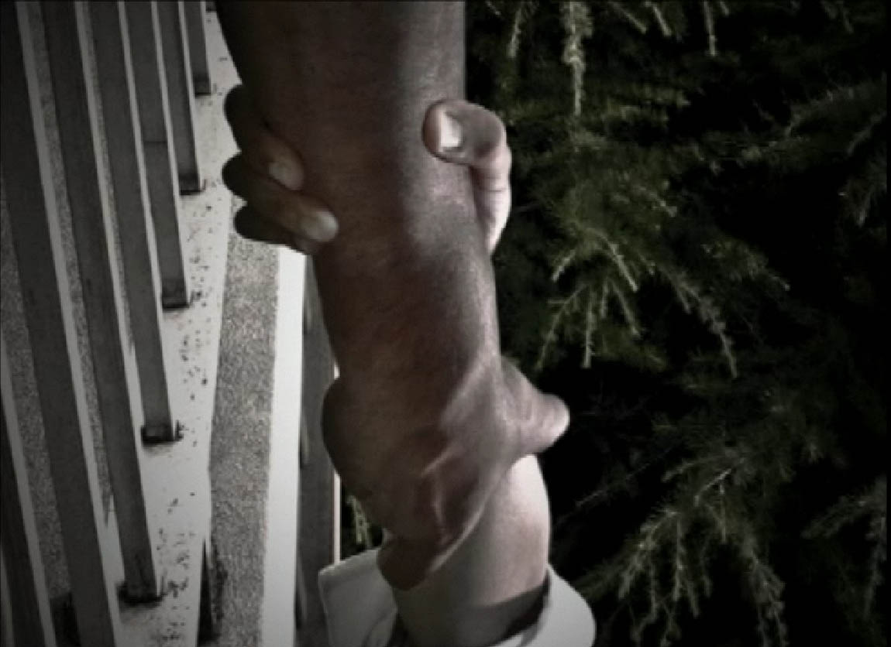
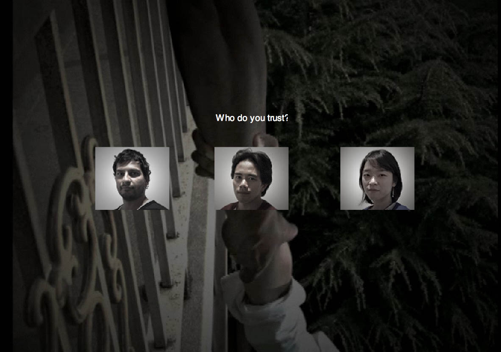
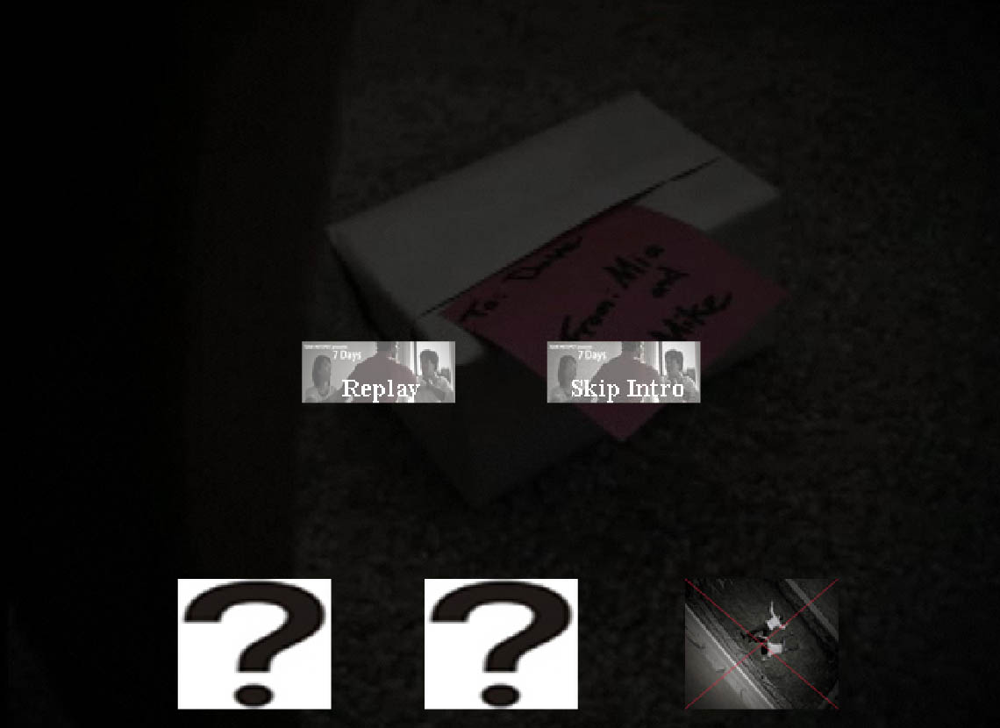

7 Days
About the Movie
7 Days is a story about a week in the lives of three friends, Dave, Mike and Mia. It is an interactive photo-film created by Masters of Digital Media students at Center For Digital Media.
Plot: Different aspects of the past can lead to different aspects of the future.
Synopsis: In this interactive photo-film, a suspected love triangle throws a close friendship into violent turmoil. A tormented husband is forced to choose between his marriage and his best friend. Perceptions of past events determine the choices made in this tense melodrama.
Duration: 6 Weeks
Team Size: 6
Click here to view 7 Days.
Note: Content involves strong language. Viewer discretion is advised.
My Role & Responsibility
As a team member, I
- was involved in storyboarding, defining story structure, characters, scenes and climax.
- served as an assistant photographer, during filming of the scenes.
- served as an audio engineer, auditing and recording the dialogs.
- developed a flash framework, which can play the video clips in series without any interruption as the user interacts with it.
- also developed the website for the 7 Days.
Achievement
- Understood the underlying concept behind story structure and character develpoment.
- Learned, how an interactive photo-film can be structured, that can lead to different endings based on user actions.
- Understood the basic idea, how movies are laid out from the start to the end.
- Learned, how important and easy it is to write the climax first and then build the story around the climax.
- Successfully completed the project in the allotted time.
|

7 Days


 |